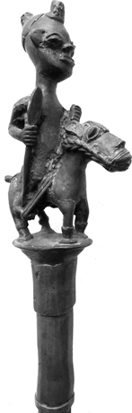
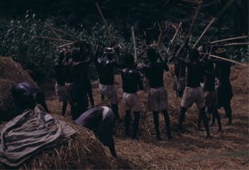

8. Special Purpose Poetry—War, Hunting, and Work
Military poetry: Nguni; Akan. Hunting poetry: Yoruba ijala; Ambo hunters’ songs. Work songs.
Some subjects are of particular significance in African poetry. Besides the subjects already elaborated there are others that could be discussed. There is poetry associated, for example, with secret societies,1 various types of associations,2 initiation,3 begging (e.g. Fletcher 1912: 62–3 (Hausa)), masquerades (e.g. Gbadamosi and Beier 1959: 38–49 (Yoruba); Egudu 1967: 9 (Ibo)), and there are also the very common songs to do with cattle and cattle herding (e.g. Ba 1950: 175–9 (Fulani); Kagame 1947 (Rwanda); Beidelman 1965 (Baraguyu); also Ch. 9). But war and hunting are topics of particular interest for many African societies, and have frequently given rise to specialized poetry; while songs to accompany work are so common throughout Africa as to demand treatment by their sheer quantity.
In treating these genres we are faced with one difficulty. Some of them, at first sight at least, so closely tied to the actual occasions on which they are performed—whether war, hunting, or work—that they seem to approach a fixed formulaic utterance with little room for variation, and change and innovation are thus at a minimum. How far then can they be treated in the same way as other, more innovatory, genres of oral literature? We are reminded here of the difficulty of making a clear-cut distinction between literature and non-literature in oral cultures. (Ch. 1) One needs to remember, however, that this distinction is clearly only a matter of degree; some of the examples mentioned here are evidently as much ‘literature’ as examples in earlier chapters. Even if we make a rough division between innovatory and non-innovatory genres, with hunting and work songs in the second category, lyric or topical songs as pre-eminently in the first, we still find that even within these categories there can be distinctions on these same lines. Among hunting poems, for instance, Yoruba ijala poetry clearly provides much scope for variation and composition, whereas Ambo songs, it seems, do not. The same might be said of work songs, depending on the amount of variation by the leading soloist (see Ch. 9). A second point is that our attitude to such examples must depend not least on the local evaluation of these pieces. Too often this is something we are not told about, so that in the meantime all we can do is to present the pieces and hope that more research will elucidate their background. Finally, some of these poems are not nearly so closely tied to their occasions as they might seem at first sight: detachment and insight, so crucial for literary expression, are also involved.
All in all there is no real solution to the problem—except to point to it and to suggest further research. What we particularly need to know about are both local attitudes to these forms and the amount of innovation and variation that actually take place.
I
Poetry about both hunting and war seems to involve the same ideas of romance and glory. Sometimes the same genre of poetry is even used to deal with both, like the Galla gheraera or boasts, universal among warriors and hunters (Chadwicks iii, 1940: 548), or the Adangme tegble poetry used both for war and to honour a man who had killed a leopard with a spear (Puplampu 1951: 141). But even where there is no such direct association, the two subjects seem to be related. Both involve action that is out of the run of ordinary everyday pursuits; in both there is danger, triumph, or heroism; and boasting, challenge, and specialized ability (sometimes supplemented by magic) are frequent elements in both.
The sorts of occasions on which war songs were sung are not very thoroughly documented—I suppose one of the conditions for the collection and study of such songs was in fact the ending of widespread warring—but it is clear that they were by no means confined to the field of battle.
The excitement and emotion associated with military exploits are often expressed in poetry beforehand. In this way both poet and audience can be stirred up to declare war or to prepare for battle. So we have the Shona:
| Solo. | King be-not-persuaded-by-other-people-not-to-fight-your-enemies ho! ho! |
| Chorus. | So long as the regiment agree, ho! ho! |
(Taylor 1926: 39)
Delafosse, when an administrator in West Africa, was similarly addressed by an Agni chief and his warriors who came to offer him their help against a rebel, urging on him and on themselves the attractions and urgency of war:
Donne-moi de la poudre et des fusils: je partirai demain.
Je veux leur couper la tête: je partirai demain.
Ils ont des femmes qui sont jolies: je partirai demain.
On dit qu’ils ont de l’or: je partirai demain.
Aujourd’hui il faut que je fasse des balles: je partirai demain.
Aujourd’hui il faut que j’offre un sacrifice: je partirai demain.
Je veux leur couper la tête: je partirai demain.
Donne-moi de la poudre et des fusils: je partirai demain.
(Delafosse 1900: 180–1)
Such war songs in fact are sometimes more an expression and reinforcement of the militant strength of a group than a direct incitement to the fight or a part of the battle itself. Several of the military poems recorded for the warlike Nilotic peoples seem to be of this kind. They involve glorification, the expression of high morale, and, very often, refer to cattle—among the Nilotes there is a very common association between war and cattle raiding:
Great bull with testicles has been killed
It is Divinity
The dark clouds and the morning rain blow up
My mother abuk, Divinity my father, help me
My father garang, help me Divinity my father
If we sleep abroad,4 the white cow of my father
Will bring us cows
Avoid the spear, my age-set Mayom, avoid the spear
An affair of the great spear (a great fight)
O my club!
The spear-haft in the man’s back quivers
deng kur is a powerful divinity.
If we sleep abroad, it brings cows
White cow of my father, I did not start the fight
The bulls meet head to head!
Cow which gave peace to my father
Cow bringing cows
Make peace as the Kongor tribe did with the Agar
Last year’s fighting is ended Last year’s fighting thus is ended
(Lienhardt 1961: 88–89; cf. also Tescaroli 1961, Ch. 3 (Shilluk))
The same associations with cattle come out in another Dinka war song where the ‘feast’ or sacrifice implies war and hostility to enemies:
Though the tribe holds a feast against me
I shall not fear,
Though all the people hold a feast against me
I shall not fear,
O my tribe, I am a bull with sharpened horns,
I am a maddened bull ….
(Lienhardt 1961: 282)
Some war poetry, then, is rather the expression of the general values relating to war than an immediate part of an actual military expedition. But other poems involve more direct participation, at least in the preliminaries and aftermath of war. The Ngoni of Malawi, for instance, had two main branches of war songs: first imigubo, those specifically intended for singing before going out to fight; and secondly imihubo, sung on their return. The first type was still being sung in the 1930s, danced in full war dress with shields and spears, and performed in the Paramount Chief’s village, the traditional place of mobilization. The women too join in the dance, and the tempo works up and up to inspire the men with the lust for battle. Many of these songs seem brief, but much of the tune was sung to meaningless though rousing sounds—inyo ho, oya ye yayo and so on—and they were added to by the varied accompaniment of stamping feet and the clashing of spears and shields. (Read 1937: 29) Similar war songs from Malawi are mentioned by Kidney. When sung they are accompanied by small drums, by the brandishing of spears, and by bodily movements signifying courage and defiance, which stir up warlike feelings:
Fight now! Come and fight now!
Slay them! We’ll brandish spears!
Straight forth doth speed your arrow.
Tremble! Yes! They tremble!
When we draw near,
And far they’ll flee as we approach them!
Sharpen keen your arrows!
Brave heads upraised and shouting
Loudly our defiance.
Quickly our spears
Shall pierce their breasts. They will be scattered.
(Kidney 1921: 26)
It is common for songs celebrating military success to become highly developed after the return home. For example, the Kamba of Kenya make the return into a triumphal procession. Special honour is ceremonially given to a Kamba man who has earned the high title of mutiaetumo, i.e. one who has personally killed a Masai warrior. Such a man leads his triumphant band round the villages. When they approach a village, they strike up their songs of victory. The hero is praised but his comrades’ help is not forgotten:
You wonder: he who sings the song of victory, who is he? He is mutiaetumo X (here follows his real name), who has fought with the men of cattle [Masai], but if we had not helped each other, he should not have come out of it successfully, aaaaah! (Lindblom 1920: 199)
The women play their part by greeting the warriors with shrill cries—lili, lili, lili, lili!—their normal way of expressing joy and delight, thus adding to the display and to the men’s sense of heroism.
The use of war poetry in the actual face of the enemy is best documented for certain peoples of North-West Africa. The Galla gheraera, warriors’ boasting, is often in the form of a challenge, sometimes hurled between two armies (Chadwicks iii, 1940: 548–49). The Somali geeraar also played an active part in war. Challenges to another clan to fight at an appointed place used to be delivered in this form, and it was also used to insult the enemy before the battle, at the same time raising the singer’s morale. The geeraar is characterized by a note of urgency and rapid movement and was traditionally recited on horseback (Andrzejewski and Lewis 1964: 49). Among other groups, however, such as some of the Southern Bantu, the convention was to utter certain set war cries rather than songs at the time of the actual charge.
War songs are possibly also sometimes sung in triumph on the victorious field of battle. This is supposed—perhaps speculatively—to have been the case with an old Bemba war song more recently sung only round the camp fire, but originally, it is said, it was sung by warriors dancing round the slain brandishing their spears. In it the chief is described sending out his warriors; on their return they
Sing songs of victory, saying,
‘Sompa, sompa, sompa, sompa, sompa’, with the heads of the slain.
(O’Ferrall 1926-8: 841)
But there are not, in fact, many references to singing at the actual moment of victory. The most frequent occasions seem to be as the war parties depart or return home, at later celebrations after victory, or, occasionally, as challenge and insult before an actual battle.

Figure 14. Ceremonial staff of Ogun, Yoruba, 25 ins high, top figure on horse 6 ¼ ins, probably late eighteenth century [detail]. Ogun is the Yoruba and Haitian god of iron, hunting, politics, blacksmiths and (the users of iron weapons) warriors. He is shown here, as often, on horseback, holding a spear (for further details see information in http://www.mamiwata.com/ogun.html).
Also common are poems in which the events of war are touched on in retrospect. The exploits of war, together with religious topics, are the most common themes of poems associated with the Islamic tradition, as among the Swahili or the Hausa. It has already been said that, apart from Islamic influence, narrative poetry is not a typical form in African oral literature, and it is not surprising to find that in many of the poems about war the element of narrative is overshadowed by that of glorification, so that one cannot always draw the line between war poetry and panegyric (including praise at funeral celebrations). The praise poems of the Southern Bantu, discussed in an earlier chapter, have war and military prowess as one of their main themes, and the same blend of praise and interest in battle heroism can be seen in the ‘heroic recitations’ of the Ankole Hima. (Morris 1964) In Ruanda, Kagame describes military poetry as taking two main forms. (Kagame 1956–7, also Coupez and Kamanzi 1962) The heroic ibitekerezo (the conquests of Ruanda) are preserved by the court bards as a type of ‘classical’ military poetry. When young men are being trained in the military arts, they have to learn these poems and try to compose others in the same style. In these, it seems, the narrative element is the more marked. The second type, however, is much more in the form of panegyric. These are the lyric odes termed ibyivugo, composed by the court bards to exalt the exploits of heroes. There is no exact correspondence with real acts, for the point is to celebrate high and often fictitious deeds rather than to record (‘c’était de la Poésie; oeuvre d’imagination’), (Kagame 1956–57: 119) and the descriptions of battles are decorated by the frequent use of praise names glorifying the hero and his companions—’Prodigue-de-blessures’, ‘Chagrins-des-pays-étrangers’, and so on. Contemplation and description of battle after the event seem inevitably to be expressed as glorification and praise.
These then are some of the occasions on which poems described in the sources as ‘military’ or ‘war songs’ were (or are) actually performed. It seems clear that the romantic picture of the ‘natural’ occasion for savage war songs—as mainly confined to the actual heat of battle, or its immediate prelude or aftermath—is an exaggerated one.
How over-simplified this popular picture is will emerge further from a glimpse of the military poetry of the Nguni and the Akan peoples. These peoples, in particular their sub-groups the Zulu and the Ashanti, were well known to their European opponents of sixty or seventy years ago for their military qualities. The Nguni case must be pieced together from various passing references to their military poetry in the past. For the Akan we can look at the equally interesting way in which a type of poetry regarded as military survives in the contemporary situation.
The Nguni-speaking peoples of southern Africa are famous for their military organization and warlike ethic. The best known of all are the Zulu,5 welded together into a great military system by Shaka in the early ninteenth century. But others too of this group have also been noted for the same all-pervading military spirit—the Swazi, neighbours of the Zulu, the Ndebele, and the Ngoni of Malawi who formed part of the great Nguni dispersal of peoples moving north as a result of Shaka’s expansion.
From Shaka’s time the whole nation was organized into a kind of military camp, and war was the main centre of interest (Krige 1936: 261ff.). The stress on military glory, on triumph, and on the possibility of attaining honour and position through achievement in war comes out both in the praise songs discussed in an earlier chapter, and also in the Zulu war songs (iziqubulo, amahubo):
Oye oyeye!
Seek out the cowards,
The lion-conqueror strikes.
Come, let’s march into battle;
No more the time for boastful arguments.
What, sayest thou the time for boastful argument is over?
Begone!
Who told the news that wranglings have ceased?
The house of Qolwana set we on fire.
We make no jokes, no lies tell we.
He is full of hate, full of hate.
Oyeyiya wo!
Come, see us set aflame the house of Qolwana.
On whom will you make war
If you wipe out all the nations thus?
Ho! Ho! …
You who defeat the foes
And conquer the nations.
If you wipe out the nations thus,
On whom will you make war?
Yea, what will you do?
You have subdued the kings;
You have wiped out the nations.
Where and what next, O Conqueror?
E! E! E!
(Dhlomo 1947: 6)
Under Shaka, the Zulu were reorganized into regiments of 800–1,000 strong, making up an army of perhaps 20,000, maybe more (Krige 1936: 262). There was a centralized standing army, an unusual feature in Africa, and unlike the Nilotes and similar peoples, the Zulu showed an interest in conquest and territorial expansion as well as mere raiding for cattle and other movables. Internally there was rivalry between the different Zulu regiments, expressed in competitiveness in battle and in dancing and singing at the royal kraal. Each regiment had its own regimental songs, dress, and war-cry, which distinguished it from others, and it was only in the actual heat of battle that the national war-cry was used; before that, as they set off, only the regimental war-cries were shouted. Each regiment also often had its military kraal, separate from others and under its own captain. Even in normal conditions the men were expected to serve for at least two to three months a year, and, if there was no war, they were engaged in various communal tasks. Even in peace, the military spirit was paramount. There was stern discipline, and military dances and songs fulfilled the function of drill.6 Many of these dances were based on military manoeuvring and amounted to a kind of sham battle. The desire for glory, the excitement of war, and national and regimental pride could be instilled within the military kraals even in peacetime.
War songs were also sung on more colourful occasions. The most striking of all was the annual first fruits ceremony held in the presence of the king, when the army of the nation gathered, regiment by regiment, to display its might in public. Several of these nineteenth-century displays are described in early sources, summed up by Krige:
The most spectacular and imposing of all Zulu dancing was … that of the regiments of warriors in full regimental dress; and the annual dances at the royal kraal, just after the Feast of the First-fruits, must have presented a most brilliant and colourful sight ….
The king first of all reviewed the army, seated in his chair of state. On the occasion witnessed by Delegorgue, the regiments of young warriors came, grouped in six great masses of about 1,000 each, made a rapid charge, then became orderly again and began to dance a war chant, the ground resounding under their feet. They marched to within five paces of the king, and formed a kind of serpent which unrolled itself from three rings. Each regiment had its own particular dance and song, and each man, on passing the king, bent low and hurled him a greeting with an air of anger. These evolutions lasted many hours …
The king, on one such occasion, took his position at the head and centre of a line of several thousand men, with an equal number opposite them. They began to sing and march, reinforcing their foot movements with gestures of the arms in all directions with wonderful uniformity. Then, chanting and dancing, the column following, the king slowly advanced and the two horns united to form a circle, the warriors finally sitting down in a ring with shields raised yet heads showing …
(Krige 1936: 342)
The excitement and pride engendered by such ceremonial displays come out too, although perhaps with rather lesser intensity, in the war songs sung before going out to battle, or in triumph after it. The desire for glory and the sense of competitiveness were incited by the stirring war songs and dances, where the words, the melody, and the movement all helped to create a warlike atmosphere. These, like other war songs, were often highly rhythmical and onomatopoeic. An example can be given from the Ngoni of Malawi, a Nguni offshoot who preserve war songs of the same types as do the more southerly Nguni groups. They are known as imigubo (songs for setting out to war) and, though short and onomatopoeic, mount up to a high pitch of intensity as the men dance, stamping their feet and knocking their shields:
Ee, ee, ee
What are we contending for?
What are we contending for
In this way in the sky?
Ee, ee, ee
Oyi, oyi, oyi!
The sun is setting.
Ee, ee, ee
What are we contending for?
What are we contending for
In this way in the sky?
Ee, ee, ee
Oyi, oyi, oyi!
(Read 1937: 30)
These songs, once so appropriate to the warlike spirit of Nguni society, are not totally forgotten today. In the 1930s some were still being sung in Malawi; others have been recorded more recently in South Africa by the African Music Society. However, nowadays they are used mainly for ceremonial display or, at times, to pander to romantic ideas about the savage and tribal past of the Bantu. Some of the songs are now sometimes adapted for faction fighting (Tracey 1948b: vii-viii), and modifications of the old military forms have been used, it is said, for political intimidation (Afr. Music 2, 4, 1961: 117 (Southern Rhodesia)). But these survivals are of less interest than the purposeful development of military literature in the nineteenth century. These earlier Nguni war songs can only be fully appreciated in relation to their complex and specialized military organization. They are not attached primarily to the circumstances of actual battle, but to the routine and the ceremonies of military activity, developed among a people for whom, even in peacetime, the military ethic was predominant.
The Akan peoples, with their multiplicity of specialist associations, are very different from the Nguni. The Akan have a tradition of warrior associations or ‘war companies’ that possess their own characteristic form of drumming and poetry. (Nketia 1963b, Ch. 9) It is true that these associations no longer flourish as in the past (the Ashanti associations, for example, were suppressed after the events of 1896–1900). But in the southern Akan area, particularly among the Fante, they are still active, and even elsewhere their poetry is still performed. There is an over-all homogeneity in their patterns of music and organization that makes it possible to generalize about their poetry.
There are two main types of Akan warrior associations: companies of the court comprising the highest war leaders under the control of the rulers, and the company of commoners, asafo, a term now used indiscriminately for all warrior associations. These war companies consist of all able-bodied men combined under a leader in external or internal disputes. They also act as a group for certain types of communal work and in the enthronement and deposition ceremonies of rulers. In the Fante area where these asafo companies are most important, there may be as many as seven or ten companies in a single town; elsewhere one village or group of villages shares one company. All these companies are highly organized bodies with their own captains, who act as intermediaries between themselves and the political rulers of the state. They are headed by the ‘captain of the host’ or war leader who is helped by various other officials, among them the frankaatufoo or standard-bearer who regulates the march, the asafo kyerema, the master drummer who calls the warriors to action, urges them on, and keeps up morale, and the nnawutabofoo, player of twin gongs.
Drumming plays an important part. Drums and gongs are played with a few members of the company leading the song, the rest acting as chorus. Among the most important songs are the calls. These are rousing cries to the company that, nowadays at least, precede or interrupt a cycle of songs but show clear marks of their once fully military character:
Fire!7 Fire!
Fire! Asafo Kyiremu.8
We are not afraid.
No, not a bit.
Asafo Kyiremu,
We are not afraid of anybody.
(Nketia 1963b: 107)
Different companies often have their own special calls and responses, sometimes partly ‘spoken’ by the drummer, and these mark out their identity as distinct from others and ‘engender the mass feeling that is so important in the activities of asafo. (Ibid.: 108)
This feeling is further intensified by the frequent songs celebrating particular companies, combining boastfulness with insults to their enemies. Thus one song about Apente (a court company) runs:
Osee, man of Apente.
Osee, man of Apente,
We shall fight battles for our nation,
There was a battle brewing; Osee,
But the army of the enemy never arrived.
We did not feel their presence.
You are children of ghosts, and nocturnal fighters.
Night fighters,
You have laid them low.
Osee has laid you low.
The night fighter has laid you low.4
(Idem)
Another such song refers to the Ashanti wars with the British and praises the deeds of Apagya, a royal military company among the Ashanti:
Hirelings adamant to rain and scorching sun,
Members of the Apagya company,
There was a cannon mounted vainly on top of the fort. 9
The cannon could not break us,
The trusted company that engages in battle.
Hail the helper!
(Idem)
The Apagya company is also exultantly praised in
He has killed the Southerners.
He has killed the Northerners,
It is Asafo Apagya,
The Umbrella tree.
The Umbrella tree has branches above and below,
The crafty Umbrella tree.
Hail the helper!
(Nketia 1963b: 108–9)
Not all military songs explicitly glorify war, however. Some also exhibit an awareness of the dangers and cost of war. There are always casualties, for ‘battle never goes hungry’. The warrior leaves in the knowledge that he may not return but that he goes to do his duty courageously:
Kwaakwaa10 accompanies me to the front.
Man of Apagya, if I die in the morning, no-one should mourn for me.
Yes if I fall in the morning,
Okoromansa accompanies me to battle, no-one should weep on my account.11
Yes if I fall in the morning,
If I fall in the morning do not cry.
Yes if I die in the morning.
(Ibid.: 109)
Members of the association are also summoned to battle by a drum-call giving the association’s name, praise name, and other characteristic marks that distinguish it from others. One of these
Bodyguard as strong as iron,
Fire that devours the nations …
is quoted in full in Chapter 17. In another the various names associated with the company are given, then the ordinary members are stirred up for the fight:
Members of the Advance Guard, I mean you.
The leopard goes hungry
If it pounces on a tortoise.
The leopard should never be considered old and feeble.
The leopard walks in the thicket:
The thicket trembles and shakes violently.
Come hosts; come hosts; come hosts!
Come in thick numbers.
(Ibid.: 111)
There are also ‘songs for conveying a dead member to a place of burial, songs for parading in the street, songs of insult, songs of incitement and so on’. (Ibid.: 110) Besides these there are also some characteristic types belonging to particular companies or groups of companies. The No. 1 Company of Cape Coast, for example, has several styles of drumming, each used with a set of songs designed to accompany different kinds of action. A high-spirited style accompanies a display of bravery in leap-dancing and strutting action, and a gentler style is used for normal dancing. Associations also sometimes create their own recreational music and dance as well as the more traditional types. All the regular songs are characterized by their emotional quality and by the specially stirring effect of the drumming, achieved largely by the peculiar timbre of the leading drums. Within this general spirit of the military songs
the leading role is … played by the cantors who may vary their styles. Sometimes they sing long sustained notes while the chorus is held in suspense; sometimes they use a recitative style, interpolating pauses in the chorus responses with calls, short phrases or shouts, while others animate the performance with occasional whistling and catcalls. Everybody lets himself go, singing at the top of his voice and with great feeling.
(Nketia 1963b: 110)
Are these military songs still significant? Obviously the directly military functions of warrior associations have been superseded, and in Ashanti at least, in the present century, they have not even acted as very pronounced corporate groups. Yet it seems that not only are the companies active on certain occasions (particularly in the south) and seize the opportunity to perform their own songs and music, but in some contexts they preserve their warlike and forceful spirit. As Nketia writes:
In the past, the most important context in which Asafo groups drummed and acted was during wars. Although this is no longer operative, there is always a resurgence of the war spirit during major political disputes, particularly disputes over constitutional issues in which Asafo groups act as political pressure groups. Thus in Ashanti, where Asafo companies are practically dormant, political crises often bring a temporary awakening of such groups who are kept together by drums and songs which promote the type of action required by the situation.
(Ibid.: 115)
Asafo music also still occurs in other contexts.12 In rural areas in the south, asafo companies are called on to perform certain communal tasks and to organize search-parties for missing persons, in the forest and at sea. Such searches create a particularly emotional atmosphere if the missing person is a member of the company, and many asafo songs are sung. Funerals of a member are also occasions for the performance of these songs. In the southern Akan states there are sometimes special annual ceremonies when members renew their loyalty to their association and to the chief, in which the most important feature is the performance of music and dancing, sometimes accompanied by the firing of guns, the exhibition of the association’s standards and emblems, and the installation of new officers. Annual festivals of the community as a whole are often the most common occasions for corporate public activity by warrior companies.
In all these contexts the spirit of enjoyment as well as of emotional intensity is now evident. The military companies are distinguished by their specialized artistic conventions—the military mode of song, music, and drumming—and, in adapting to changing situations, retain the military subject-matter and warlike fervour which before was of more practical immediate relevance.13
II
Hunting poetry can be discussed more briefly. It shares many of the characteristics of military poetry, particularly its association with the ideas of danger, pride, and glory, its common appearance as a more or less specialized branch of poetry, and, finally, its frequent preoccupation not just with action but with the contemplation of action, in prospect or (more often) in retrospect.
It is not surprising that hunting, with its associated hazards and heroism, is a frequent topic in the songs of many peoples. It is, for example, one of the most common themes of Bushman songs (Kirkby 1936: 245) in a way that fits their harsh struggle for existence. This is well expressed by Marshall:
Women bring the daily food, but there is nothing splendid about returning with vegetables and wood. Many of the vegetable foods, furthermore, are rather tasteless and harsh and are not very satisfying. The return of the hunters is vastly different. The intense craving for meat, the anxiety that goes with the hunt, the deep excitement of the kill, finally the eating and the satisfaction reach to the very core of the people, engaging powerful emotions. Once a young man, Qui, who was said to be the best hunter in the region, had been charged by a magnificent cock ostrich on a big open pan where there was no refuge. He knelt, facing the creature, until it was within close range and shot an arrow straight into its heart. Back in the werf, while the meat was being cut up and distributed by Qui’s wife’s brothers, he slept exhausted on the mound of black and white plumes and the women—some of the plumes in their hair—danced a dance of praise around him. This is the role of! Kung [Bushman] hunters.
(Marshall 1965: 235)
The romance and excitement associated with hunting is vividly depicted in the Zulu song about a buffalo hunt:
Iyeyahe! Iyayayi!
A whirlwind! the buffalo!
Some leave and go home;
Some pursue and obtain;
We shoot the rising,
But leave the wounded.
Iyeyahe
(Dhlomo 1947: 6)
Perhaps the most common occasion for hunting songs is a successful kill. As in military celebrations, they often take place some time after the event. We do, it is true, occasionally hear of a solitary hunter or group of hunters bursting into more or less immediate song over some outstanding kill. Among the Akan, for instance, a hunter is expected to climb on to the body of an elephant and burst into song:
The violent shaker that shakes down living trees it by-passes [the elephant],
Duedu Akwa,
Father Duedu Duben,
Oben and Dankyira, trier-of-Death,
Father [the hunter] deserves to be congratulated.
Father has achieved something:
The hunter has done well!
(Nketia 1963b: 81; for a Rongo song in similar circumstances see Junod 1897: 55)
But even among the Akan, hunting songs are most frequently performed on public and festive occasions. In general the most commonly mentioned occasion is when the hunter has returned to the village: he is often welcomed and congratulated. The Ethiopian hunter returning from killing an elephant is received by a double chorus:
| 1st chorus. | He has slain, he has destroyed him. |
| 2nd chorus. | Whither went he when he slew him? |
| 1st chorus. | As he went hence did I see him at all? |
| All. | Perhaps on the bank of the river he has stricken him down.Destroyer and slayer art thou called, Hurrah, Hurrah, doubly a slayer. (Chadwicks, iii, 1940: 514) |
Among other peoples a later and more organized celebration is the usual pattern. Thus among the Limba of northern Sierra Leone, the killing of a bush cow is regarded as the occasion for a special celebration (madonsia). But this never takes place on the actual occasion of the hunt. Instead, a special date is fixed, several days later. Then, in the night, the hunter comes out, accompanied and watched by others, and the special hunters’ songs and dances are performed. The occasion necessarily involves many people as participants and spectators, and is in striking contrast to the actual process of the hunt, typically pursued, among the Limba, by the solitary individual, followed only by his faithful dog.
Praise and celebration is often reserved for the killing of game considered to be particularly outstanding or dangerous. According to the area, these may be such animals as elephant, lion, leopard, or buffalo. The risks and the achievement of the hunter(s) are further magnified by the terms used to refer to these beasts—like, for example, the Yoruba ‘Elephant praisenamed He-who-uses-his-hand-as-a-trumpet, Elephant called He-who-remains-mountainous-even-when-seated’ (Babalola 1965: 51). The hunter himself also sings boastfully of his exploits and retells his heroism in poetry designed for an audience rather than for the exigencies of the hunt itself. Among the Akan he announces his return after a major kill by firing his gun on the outskirts of the village, and when people come to meet him he relates his success in recitative, a set refrain denoting the sex of the elephant killed—for example:
I am stalking an animal.
I am stalking an animal stealthily,
That I might kill it.
(Nketia 1963b: 84)
Such songs of triumph and recollection are common and are often mentioned as separate forms. In some societies they are particularly specialized. Hunters may be expected to undergo special training, often involving magical and artistic as well as practical skills, and are sometimes formed into organized associations with their own rules, hierarchy, and initiation. Such organizations are not uncommon in West Africa and often have their own songs. Among the Akan the professional association of hunters uses hunting songs to assert their pride and their dominance over even the political authorities—or so they wish to suggest:
Is the chief greater than the hunter?
Arrogance! Hunter? Arrogance!
The pair of beautiful things on your feet,
The sandals that you wear,
How did it all happen?
It is the hunter that killed the duyker:
The sandals are made of the hide of the duyker.
Does the chief say he is greater than the hunter?
Arrogance! Hunter? Arrogance!
The noisy train that leads you away,
The drums that precede you,
The hunter killed the elephant,
The drum head is the ear of the elephant.
Does the chief say he is greater than the hunter?
Arrogance! Hunter? Arrogance!
(Nketia 1963b: 76)
Hunting songs are also often sung at the funerals of skilled hunters.14 Hunting associations also sometimes have special festivals when, for example, they admit hunters to new ranks in the hierarchy or celebrate a major kill (Ibid.: 85ff.). At these celebrations the episodes of the hunt are often dramatically re-enacted, with the members of the association singing and declaiming the traditional hunting songs.
In some cases, hunting poems have become a specialized and independent branch of poetry, no longer related to the actual hunt at all. Yoruba ijala chants, for example, are sometimes associated specifically with hunting and performed at gatherings of specialist hunters. But ijala artists are also highly regarded by the public as general entertainers and are invited to perform on social occasions that have no specific association with hunting at all (Babalola 1966: 33). This genre of Yoruba poetry has its own conventions and themes (see Babalola 1964). It is delivered as a kind of recitative—’a type of speech utterance with rudimentary musical characteristics, rather than a species of song’ (Babalola 1966: 33)—which is accentuated by certain rhythmic and tonal devices. Often there is no very clear central theme, but the poem rambles from one topic to another in a way that distinguishes these poems from certain of the other specialist branches of Yoruba poetry and also demonstrates how far removed this species of hunting poetry is from direct involvement in action. One dominant theme is verbal salute and praise in such phrases as ‘Son of a fighter at Ilala, offspring of warriors carrying many arrows’, or ‘In my very person I have come, / Atanda He-whose-face-is-usually-cloudy-like-the-sky-before-a-storm, / He-who-fatigues-his-opponent-like-a-person-soaked-and-exhausted by rain’ (Babalola 1965: 52; 54).15 But there are also many chants about the animals and plants of the forest, particularly about monkeys, antelopes, elephants, or the much feared buffalo. Various comments on social life are also typical and many of the poems are noted for their vitality and humour, in particular their treatment of sex. These points can be illustrated from three ijala poems from Gbadamosi and Beier’s examples:
Tuku—Wild Pig
The fat one of the thick bush.
The animal that carries scissors in its mouth.
Although we do not marry his daughter
Yet he demands to be treated like our father-in-law.
(For the one who wants to shoot it
Must prostrate to it).
An animal that enlarges its nose
In order to better smell the vagina.
(Gbadamosi and Beier 1959: 33)
Erin—Elephant
Elephant who brings death. Elephant, a spirit in the bush.
With his single hand he can pull two palm trees to the ground.
If he had two hands—
He would tear the heavens like an old rag.
The spirit who eats dog, the spirit who eats ram.
The spirit who eats a whole palm fruit with its thorns.
With his four mortar legs—he tramples down the grass.
Wherever he walks, the grass is forbidden to stand up again.
An elephant is not a load for an old man—
Nor for a young man either.
(Gbadamosi and Beier 1959: 34)
Cassava
If you eat me and call my praises at the same time
You teach me to be dangerous.16
Plant me like a good planter—and I will grow fat even like yam.
Throw me away—and I will still develop well.
But the one who hangs me on the branch of a tree—he is really my enemy.
I do not fight the one who holds the stick—
Only the one who holds the pot.17
It causes the lips of the wife to swell.
It enlarges the penis of the husband.
The mouth of Lambare becomes large like a drum.
If you ask him: What is the matter?
Are you eating so much cassava?
He will reply: Oh, occasionally, occasionally,
You just wait: cassava will deal with you.
Tete Bere! Now you have dysentery!
Now you start worshipping Oshun!
This is not a matter for the gods:
Even if you pray to Obatala himself
Cassava will carry you away!
When people see you on the road they argue:
Is it a new wife? Ha, it is cassava.
See how it rubs its body with red camwood.18
Cassava with a rough skin to its back.
(Gbadamosi and Beier 1959: 34)
These ijala poems are far removed from simple and more direct hunting songs. The Yoruba hunter is expected to possess intellectual skills beyond those to do with the hunt and to sing of other topics than his own bravery. Yet these poems are locally classed as the poetry of hunters and ultimately are connected with the same root idea as in other hunting poems—the idea of hunting as a heroic and memorable activity.19
This cursory discussion of hunting poetry will be concluded by a somewhat fuller account of the hunting songs (cinengwe) of the Ambo of Zambia, which have been treated in some detail by Stefaniszyn (1951).
For the Ambo the hunter—and above all the elephant hunter—is traditionally surrounded with a halo of romance and hero-worship. Though there seem to be no associations of the West African type, nevertheless, hunters are experts and have their own rituals, feasts, and songs. The Ambo hunter seems to be typically a solitary practitioner, but in certain respects he is helped and guided by other members of the community and has obligations to them when he kills meat. He usually receives his gun—the mark of a hunter—from one of his mother’s relations in accordance with the matrilineal inheritance pattern of the Ambo, and, both after his acquisition of the gun and before certain of the hunts, private and joint rituals are carried out to ensure success. A hunter also has a special relationship with the spirit of one of his dead kinsmen, often his father, who guards and guides him as a hunter. The emotional relationship with his father is of a much more personal nature than the legal bond with his matrilineal kin and comes out in several of the hunting songs. The son praises his father’s exploits as a hunter and mourns his loss:
I had a father,
The wailing is great.
Father, it’s dawn …
I remember the great hunter.
They are bursting into tears …
I, a poor fellow, I shall wail,
I, who had been dividing the meat.
(Stefaniszyn 1951: 6)
Or, again, he sets out delighting in his gun. Then his thoughts are drawn back sorrowfully to when his father was alive—but he brings himself back to the present, to look at the tracks of his quarry:
How fine is my gun,
How fine is my gun,
Ah, when my father was alive.
I mourn for Siliyolomona,
But I must see the tracks.
(Stefaniszyn 1951: 6)
When an Ambo hunter is wandering alone and unsuccessful he sometimes sings to cheer himself up. But by far the most frequent occasions for performing the hunting chants are communal ones. The hunting chants are sung with other songs at ordinary beer parties. A hunter also joins with others in singing on the night before a hunt, and at the sacrificial beer for a successful hunt. A special ‘hunting feast’ may also be prepared by a hunter who has killed, say, four animals. He invites his friends and feeds them from the meat he has killed. After the meal the men sing about the hunt. They reminisce, for example, about how the game is being cut up or how a canoe is called for after a hippopotamus has been killed:
Chop it, chop it, chop it,
Do take it and chop it;
Do take it and chop it yourself.1
Chipishya, bring the boat,
Have you killed it, hunter?
Chipishya bring the boat,
Chipishya bring the boat,
Have you killed it, hunter?
(Ibid.: 4)
Stefaniszyn states that the hunting songs sung on these occasions are all traditional ones, and that no new songs are composed. They are all relatively short and fairly directly involved with the actual process of hunting and its consequences. In other words, Ambo hunting poetry does not seem to have developed into a complex and flexible branch of poetry that can be turned to many subjects and occasions in the way we have seen in some of the Akan or Yoruba ‘hunting poems’. Nor are there lengthy narratives. ‘This is lyrical poetry. There are no long descriptions of events, but a short recalling of events of rather sentimental value, always very realistic’. (Stefaniszyn 1951: 11–12)
Their artistic conventions come out partly in the mode of delivery. Though they are sung antiphonally, the melody is not of great importance and the main tone is recitando with strongly marked rhythm. The accompaniment consists of percussion (gourd drums, rattles, and axe-blades struck against stones), and sometimes the hunter himself dances with a gun, horns, and animal trophies. There are also stylistic and verbal conventions. A special poetic vocabulary is used in the songs, including borrowed and perhaps archaic words. This poetic effectiveness is heightened by the frequent use of ideophones and of what Stefaniszyn refers to as ‘Homeric epithets’—praise terms like ‘The uprooter of mwenge trees’ (of an elephant) or ‘The pursuer of game …. The pursuer of tails’ (the hunter). The use of various types of parallelism is also common, compared by Stefaniszyn to that in the Hebrew psalms. This may involve more repetition or the type of development through parallelism exemplified by
Off he went to the veld,
Off he went to the veld, the great hunter.
(Stefaniszyn 1952: 11)
Parallelism is also used to lead up to a climax at the very end of the piece—a marked tendency in these poems:
Heavens, my heart is throbbing,
While I see them standing.
Heavens, my heart is throbbing,
While I see them standing,
While I see the game standing.
Nafwa mutima kubamba,
Pakusanga silimakene.
Nafwa mutima kubamba
Pakusanga silimakene,
Pakusanga silimakene noma.
(Ibid.: 10)
This song, expressing the hunter’s thrill at the sight of game, leads up to an effective climax when the final word ‘game’ (nama) ‘is at last uttered as if with awe’. (Stefaniszyn 1952: 10)
Besides the conventional forms of delivery and verbal expression there are also stock themes, all directly concerned with hunting. Several of these have been illustrated already: the triumph and excitement of a successful kill and its aftermath; family feelings, especially the emotions of pride and grief felt by a son for his father; and the thrill of pursuit. But the hardships and dangers of hunting are not forgotten, and these too are common subjects. The Ambo hunter’s grim tenacity and perseverance in face of hardship are often extolled:
Let the hunter take out the thorn,
Let the hunter take out the thorn,
Then cursing and roving.
You love it, you will die of the thorn.
Off he went to the veld.
Off he went to the veld, the great hunter.
(Stefaniszyn 1951: 4)
Worse than physical hardship is the disappointment when the hunter is unsuccessful, and this too is a frequent theme in song:
I shall taste the mark of the game,
When I find them where they lie.
Abundant is the spoor of game,
But the game has slipped away—
It is gone.
(Idem)
and
We are tired of this bush;
There are no shadows in it,
There are no shadows in it, mind you,
There are no shadows of game. (Idem)
Success is sometimes tinged with jealousy when the hunter compares his own achievements with those of others. One song, for instance, describes the success of a hunter’s companions:
It’s boiling and boiling,
The hunters are cooking in a big pot.
It’s boiling and boiling,
The hunters are cooking in a big pot.
Truly it’s boiling hard,
I’ll kill two head to-morrow.
(Ibid.: 9)
These Ambo hunting songs are more simple and direct than, for example, some of those from West Africa. Yet like them they involve the glorification of the hunter, the expression of his hopes and fears, the activities of the chase, and reminiscence and reflection at a time removed from the actual hunt. They are most frequently performed on public occasions—for in hunting, as in war all members of the community, and not just the individual hero, are involved in both its results and its poetic distillation.20
Songs to accompany rhythmic work seem to occur universally in African societies. They are extreme examples of ‘special purpose’ poetry in that they have a direct connection with a specific occasion and with action itself, to an extent not found in most hunting and war chants. The sort of work that these songs accompany usually consists of routine tasks such as paddling, threshing, or hauling—which are not in themselves regarded as glorious or romantic. Unlike hunting and military poetry the work thus provides the occasion rather than the subject-matter, and the song depends on the rhythm of the work rather than an audience for its point of departure.
The occasions for these work songs include almost all contexts in which monotonous labour is involved; though conventions as to their use vary in different societies.21 There are co-operative songs for hoeing, weeding, mowing, launching a boat, sawing, hauling in fish-nets, pounding, floor-beating, throwing water up from deep wells in a human chain, carrying a chief in his hammock, hanging up beehives, or rubbing animal skins to make them soft; there are domestic and solitary songs for women grinding corn or pounding rice; there are gang songs for pulling trucks, for road work, for factory hands, and for miners.
It is well known that manual workers often sing such songs to accompany their hard physical labour. The dock hands at Beira have a song
Dawn—with freight,
Yes, Yes!
Dawn—with freight,
Look for the label.
(Curtis 1920: 32)
while the men pushing heavy truck-loads of hides down the Kilindini road in Mombasa used to sing in Swahili
| Namna hii—macho jnu! | This way—eyes up! |
| Senti hapana—macho juu! | There are no cents—eyes up! |
(Werner 1927: 102)
Many other similar songs are popular among labouring gangs. There are, for instance, the songs by South African road workers and miners, by the men working on the Kariba dam, or by builders in Nigeria.
Figure 15. Limba work party spread out in the upland rice farm, inspired by Karanke’s drumming, Kakarima, 1961 (photo Ruth Finnegan).
In rural areas, agricultural work provides the occasion for work songs. For instance, in Southern Rhodesia, maize threshing is a popular time for songs. The men and boys do the singing while the women stay in the background, yodelling at intervals with a staccato effect. As often with work songs, the words themselves are simple, with many nonsense words to fill up the rhythm effectively, and there is alternation between leaders and chorus. This is evident in the following three Zezuru threshing songs from Southern Rhodesia:
| 1st. | Leave me to die, they have gored me, Nwechafaka. |
| All. | Yes, yes (he he ha he ha) the priest, oh, plenty of trouble. |
| 1st. | Do not trouble me— |
| All. | Trouble, trouble |
Let the women dance in our honour, do not trouble me
My wife do not come to trouble me.
| 1st. | Wife |
| All. | Trouble |
| 1st. | To the spring |
| All. | Trouble |
We love each other friend, is she not friend.
| 1st. | Woe is me, we have grown up |
| All. | Those who have cattle, let them gather them, we do not know |
| 1st. | Woiye iye iye you must thresh like mother |
| All. | Oh, they cry for a fruit tree. |
(Stead 1937)
The way such songs can at once lighten, co-ordinate, and embellish agricultural labour can be briefly illustrated from two types of work songs among the Limba. For them, songs accompany many of their agricultural activities. Two only are singled out here: hoeing the rice near the start of the farming year, and the threshing that follows harvesting.
One of the most demanding occasions of the Limba farming cycle is hoeing in the rice after it has been sown, and this, if undertaken by individuals, is regarded as involving wearisome and exhausting labour. The most common practice is to form special ‘companies’, each with a drummer, to go round to the farms to hoe. The occasion is turned into a festive one. The drummer stands in front, beating his drum and leading the song. Next follow those who are scattering the seed. And finally the hoers come, perhaps sixteen or twenty of them, sometimes fifty or more, stretched across the hillside in a long line singing in reply to the leader. The whole line raise their hoes simultaneously, then strike together at the ground three times before the up-stroke and pause as the hoes are raised once more—a marked rhythm of dig, dig, dig, up; one, two, three, pause, with strong emphasis on the first down-stroke. The beat and song keep the line exactly together, and there is a feeling of competition and excitement which keeps all in their places with no falling behind or faltering. In this way the huge farm gets hoed with incredible speed, and the Limba themselves point to the importance of the songs in adding both efficiency and pleasure. Their joy in the songs is very obvious (they even look forward to this season of exhausting work), and many of them make semi-dancing steps as they progress with their hoes up the hill.

Figure 16. Work company of singing threshers at Sanasi’s farm, Kakarima, where the work is accomplished with amazing speed and joy, the rhythm being essential to coordinate the blows, 1961 (photo Ruth Finnegan).
Many Limba consider the songs used for threshing even more attractive. In these—normally sung by rather smaller groups—the words are more developed, more variation seems to be encouraged and many different songs are sung on one occasion. There is no drumming and usually no specialist singer, for even the leader takes part in the work, albeit a little less vigorously and regularly than the others. The occasion of threshing is a happy one: the harvest is on the way to completion, there is plenty of food once again, and the moment that has been looked forward to throughout the year has arrived. The rice is piled up on the threshing area, and the young men gather round with their sticks, raising them in a ring of a dozen or so at a time. Another ring may form at the other end of the threshing floor, and, led by the most expert singer, the two groups begin by answering to each other’s song in turn, repeating the verse inaugurated by the leader. Later they join together in the chorus. Again a fourfold rhythm forms the framework of the music and the work, this time with the stress on the third beat, followed by a pause as the sticks are raised and the men take a step together, kicking up the straw, to move down the floor—beat, beat, beat, pause; one, two, three, step. With heavy sticks about three feet long, brought down with great force, the co-ordinated timing given by the rhythm of the music is indeed necessary to avoid accidents as well as to encourage and delight both workers and bystanders. They may sing, for example:
| Soloist. | Don’t reproach me about (not having) children! |
| I had a child long ago but God did not let him live. | |
| 1st chorus. | Don’t reproach me about children! |
| I had a child long ago but the witches ate him. | |
| 2nd chorus. | Laima o laima.22 |
| 1st chorus. | Yes! |
| 2nd chorus. | Laima o laima. |
| Double chorus. | Don’t reproach me about children! |
| I had a child long ago but the witches ate him. | |
| Soloist. | Don’t reproach me about (not having) a wife! |
| I had a wife long ago, but the chief took her. | |
| 1st chorus | Don’t reproach me about a wife! |
| I had a wife long ago, but the chief took her. | |
| 2nd chorus | Laima o laima. |
| 1st chorus. | Yes! |
| 2nd chorus. | Laima o laima. |
| Double chorus. | Don’t reproach me about a wife! |
| I had a wife long ago but the chief took her … |
and so on and on with constant repetitions of the soloist’s verses. This time the dancing is quite explicit. The step onwards is a dance step, the movements are thought beautiful in themselves, and sometimes the rice is beaten only twice so that the dance can be elaborated in the time of the third beat. The work is exhausting and the men run with sweat—but the dominant feeling is of a festive and artistic occasion.23
Canoeing songs are common among many riparian and coastal peoples. They are especially well known in the Zambesi area. The Chikunda people, for instance, are known as excellent watermen along the Zambesi from its mouth to Feira, and their boat songs are excellently designed to accompany the rhythm of their paddling:
The outside hand holds the paddle shaft below the bulwarks and over the side. The shaft is then tapped on the boatside during the stroke and again as it is being withdrawn from the water. Then there is a pause before the new stroke. The rhythm is one of four beats, thus—instroke, tap, tap, silent, in, tap, tap, silent. This gives the effect of triple time, and so a cross rhythm results when combined with the singing. The speed of stroke varies between 40 and 44 to the minute.
(Denny 1936–37: 35–6)
The songs are usually sung by a soloist, often encouraged by shouts from his companions, while the chorus comes in with meaningless words like aye, oyo, ndende. Sometimes they are sung antiphonally, one side of paddles answered by the other (Kidney 1921: 119). The actual words are simple, and the attraction of the songs seems to lie in the music and the rhythm that accompany the steady stroke of the paddle. There is also some interest in the subject-matter, which, however sketchy, distracts from the labour of the moment:
Let the horn sound!
Sound the trumpet;
Yes, let it sound.
(Ibid.: 41)
This is a song about drinking: the beer is finished, so now let us dance, to drums and horns. Or again:
Leave the drum, leave the drum,
Leave the dance.
I wear clothes
Because I am clever.
(Idem)
The background to the third song is said to be a husband’s asking his wife where she had got extra clothes beyond what he himself had given her. She replies with this song repeated over and over by the paddlers. The next song is also about love, the song of the cunning Don Juan who has only to look at a woman and speak for her to come—but he never marries properly and is always in trouble with the parents:
I have married a wife with my eyes,
The dowry was my mouth, ye ye;
I have married with my eyes.
(Denny 1936–37: 38)
Many of the other songs too are about everyday matters—love and marriage, leaving and returning home, dancing, eating, family life. About the only one that refers to the river at all is about the hippopotamus (poetically called a rhinoceros), which is a favourite dish along the river:
O rhinoceros, O man rhinoceros,
Rhinoceros of the river banks
Is good to eat with tomatoes.
(Ibid.: 42)
The same type of subject-matter also occurs in songs by some of the Congo river boatmen. The Mabale paddle songs recorded by Tanghe (1926–8) are more often about local events, death, the ancestors, or the local chief than about the monotonous and protracted labour of propelling the canoes. The rhythm of the paddles provides the framework of the song. The binary measure in the song matches the twofold structure of the paddle strokes—first a strong beat corresponding to the tension of the muscles and sweep of the paddles, further marked by the beat of an accompanying gong or drum; and secondly a relatively feeble beat while the paddles rest. These paddle songs are sometimes by a soloist echoed by a chorus but, unlike the Chikunda examples, they are more often sung by the whole crew, preceded and accompanied by the beat of a drum. Consonant with this pattern the words are short and simple in the extreme. The song
Ekouloulou, qui rames incessamment;
Ekouloulou, qui rames incessamment;
Ekouloulou, qui rames incessamment …
(Ekululu jaboluka ntek’ …)
repeated over and over in unison is one of the few to refer to the actual work—the crew compare themselves to the little ekululu fish that is always swimming. (Tanghe 1926–28: 830; 832) Even simpler are the words which alternate between solo and chorus:
| Solo. Les herbes | Chorus. Oye |
| Solo. Les herbes | Chorus. Oye |
(Tanghe 1926–28: 830; 836)
| Solo. | Chef, o, | Chorus. | Waza waza |
| Chef, e, | Waza waza | ||
| Ventre, e, | Waza waza | ||
| Fusil, e, | Waza waza | ||
| Malle, e, | Waza waza | ||
| Sel, e …. | Waza waza …. |
(Tanghe 1926–8: 830)
The structure is also simple, and, like many such songs, depends fundamentally on various types of repetition: repetition of the same formula (with or without a pause); repetition with a slight variation the second time through; and alternation and repetition of two different phrases, sometimes with variation. They are sung in a slow, monotonous, and plaintive way, repeated over and over in uniform and regular measure, with the low and constant accompaniment of gong or drum in the background. Each song is brought to an end by a long-drawn-out final note, followed by a long low note, not really part of the song itself.
While most of these Mabale paddle songs are sung in unison, occasionally led by one of the paddlers, there is also sometimes a specialist singer. This is a young man with a reputation for both his voice and his repertoire of songs who comes specially to sing and is exempt from paddling. He may sing in alternation with chorus, but sometimes performs freely on his own, a situation which is held to lead to the best songs of all. Yet even here, it seems, the words themselves are relatively unimportant. What matters is the regular repetition that stimulates and eases the effort of paddling:
Hélas, mon enfant;
Hélas, je le pleure;
Hélas, avec douleur;
Saurais-je l’oublier, hélas.24
(Ibid. 831; 838)
Hélas, mère;
Hélas, mère;
Un homme est tombé;
Un homme est mort …25
(Ibid.: 830).
The occasions mentioned so far all involve rhythmic work by a group of people in co-operation. But there are also solitary work songs. Grinding corn, for instance, though sometimes done by several women, is also often performed by one woman alone. This is a situation that gives scope to the expression of more personal feelings, uttered at greater length, than in the group songs. Thus a Kamba woman’s grinding song is concerned with her own experiences. She was married to a man employed at a German Leipzig Mission Station, a place with large whitewashed buildings that she compares to the hills. She had once said she never wished to set foot in a mission station, but even so she has now left her parents and come to live here at the ‘master’s’ (missionary’s) place:
Let me be! Let me grind my flour in peace and recover from my grief!
You tell me that I have now neither people nor mother.
Although I once said that I would never come to these ‘hills’,
Yet I have come here to build my hut at the master’s (place).
These high hills, they shine like the seeds of the kivuti26 tree, or like coins.
I am tending my father’s roaming bull.
(Lindblom iii, 1934: 48–9)
A similar personal comment is evident in a Sotho domestic song, the lament of a woman whose man is away:
Far, far away at Molelle’s place,
Where is the train going?
He has been away at the mines too long.
I, poor child, always say that.
I have lost my relatives
And have no one to tell me what to do.
(Afr. Music 2, 2, 1959: 76)
The various types of work songs can be seen to shade into songs for dancing, for in each case the singing accompanies rhythmic movement. The difference, obviously, is that dance movements are not regarded as monotonous or laborious. But even so there is some overlap between the two, with ‘work songs’ also functioning as, or following the pattern of, dance songs. Thus the Swahili truck-pushing song quoted above has all the characteristics of an up-country ngoma (dance) song (Werner 1927: 102). Some tasks, furthermore, are carried out in a half-dancing manner, so that, as with the Limba threshing songs, the work becomes attractive and artistic rather than merely laborious, and the song a background to a kind of dance as well as to labour.
This discussion of work songs has already involved some mention of their style. Since they typically accompany collective rhythmical movement, it is not surprising that a common form is that of leader and chorus. The chorus words tend to be particularly simple, often meaningless—iyo, ayo, ye ye, etc.—or involve repetition from the solo part. The soloist has more scope to develop or improvise his words, particularly when, as sometimes happens, he is not expected to take part in the work directly but can concentrate on his singing (and on the musical accompaniment or even dancing that he is also at times responsible for). But even so, the wording of these songs is usually simple. Typically the leader only sings a line or two of his own before his words are taken up by the chorused refrain brought in by the rhythm of the work, and there is little opportunity for elaboration of the verbal content. The structure of a Southern Rhodesian work song recorded by Tracey is characteristic in this respect. The poetry of the words results in a carefully balanced piece of verse, but the words themselves have little significance:
| Chorus. | Herende hi ho hi haiwa, hiho gore we hi haiwa (no meaning) |
| Solo. | The girls have got their dancing beads on (i.e. this is a joyful occasion) |
| Chorus. | Ye wo ye (oh, yes!), they’ve got their dancing beads on … |
(Tracey 1929: 100)
It is the rhythm and the melody, not the words, that are the most striking aspects of these songs. The rhythm of the work provides the fixed framework within which the song must be developed, a framework that is likely to continue for a long period of time during which the song (and the work) is repeated again and again. The importance of the rhythmical aspect is brought out further by the cases—which are beyond our scope here—where complicated percussion is the main element of interest in accompanying, the work. This sometimes takes precedence over or even altogether replaces the words, and may be by drums, hammers, or even the regular sequence of blows used by shipworkers in Dar-es-Salaam as they hammer the rust off the steel sides of the ships—’producing a pleasant effect which no doubt assists them in the performance of their monotonous task’ (Tracey 1957: 82). In the songs the words are punctuated and framed by rhythmical effort—by hauling at the net in Ewe fishing songs, strokes of the hoe or flail in Limba farming songs, paddle strokes in canoe songs. It is this that provides their main structure and conditions their style.
Figure 17. Limba women’s daily task of pounding the rice for their favourite food is often lightened by song, often heard (and learned) by the babies tied to their backs, 1961 (photo Ruth Finnegan).
Work songs stand out from others in their directly functional relationship to the activity they accompany. Occasionally they appear as a separate art form for sophisticated audiences,27 but normally they are inextricably involved with the work itself. This is particularly true of songs accompanying collective work. The joint singing co-ordinates the action and leads the workers to feel and work as part of a co-operating group, not as separate individuals. Such co-operation may be essential to the job in hand (e.g. in hauling, paddling, and other tasks which depend on exact joint timing), but even where this is not essential, as in hoeing or road work, the rhythm of the song still encourages collaboration and control within the group, a pressure on all to take part equally within the given rhythmic framework. The function of rhythmical music in encouraging people to work harder, faster, and with more enjoyment has frequently been noted. Work songs can also comment on life in general, on local events, or on local characters, and can express ideas of love, friendship, or even obscenity (Evans-Pritchard 1929). In short, work songs lighten the labour and give an opportunity, however limited, for poetic and musical expression in the midst of work.28
Such songs seem to occur throughout Africa. Their detailed words and form, however, have not been extensively recorded by either linguists or sociologists who have tended to leave this field to musicologists.29 However, it may be that the same characteristics which have led to this partial neglect—their relatively slight verbal element, their close association with work, and their musical quality—are precisely those which encourage the continuing development of such songs so that they fit new as well as older types of work. This kind of song, probably unlike military and hunting poems, is likely to remain a continuing source for the student of oral literature.
Footnotes
1 e.g. the songs of various Limba societies.
2 e.g. the songs of the various associations in Dahomey, which extol their own worth and the aid they give to members (Herskovits 1938, ii: 331).
3 e.g. Lambert 1965 (Kenya); Driberg 1932: 14–15, 29–30 (Didinga and Lango); Schulien 1965: 59ff. (Cameroons Fulani); Alnaes 1967; Dieterlen 1965, part ii; Krige 1968; Von Sicard 1943 (AA 18.645).
4 i.e. as warriors on a cattle raid.
5 The most convenient summary is that in Krige 1936.
6 Similar Swazi chants to accompany military drill (still being sung) can be heard on a recording in the ‘Music of Africa’ series (GALP 1041).
7 Sign of danger hence = alarm.
8 The name of an association; any other such name may be substituted.
9 Refers to the Ashanti wars with the British.
10 The god of a certain Apagya company.
11 As interpreted by a member of the company: ‘If I fall in the morning of my life, do not cry’.
12 Or apparently did when Nketia was writing. His book appeared in 1963, based on field research in the 1950s.
13 Other references on military songs include: Munonga 1952 (AA 5. 345; includes eight war songs); Cerulli 1942 (reference in IAI Bibl. (AA) Jones 1959: 33); Savard 1965; Gaden 1916; Westermann 1912: 237–8; Dahle 1927: 174–95.
14 e.g. among the Dogon, Limba, Akan, Ambo, and many others.
15 The last two sections of the second passage consist of three words only in the original.
16 It is forbidden to say the oriki (praises) of cassava while eating it.
17 When making gruel out of cassava flour the one holding the pot may burn his fingers.
18 Cassava has a reddish colour like camwood. New brides rub their bodies with camwood.
19 For further discussion and examples of ijala poetry, see Babalola 1966; also Collier 1953.
20 Further references to hunting songs include Bouillon 1954 and Paulay 1952.
21 On the conventions in different parts of Ghana, for example, see Nketia 1962: 7.
22 Meaningless but (to the Limba) pleasing syllables.
23 Fieldnotes, 1961.
24 Two soloists.
25 One soloist.
26 Large red seeds with black spots.
27 e.g. the Ganda paddle songs performed at court (Roscoe 1911: 37).
28 For a further general discussion of work songs, see Brakeley 1949, also Jones 1959: 39ff. (Ewe) and Wilson 1966: 77.
29 Musicologists have made many recordings of such songs, particularly in Central Africa; the words, however, are often not published with these recordings.